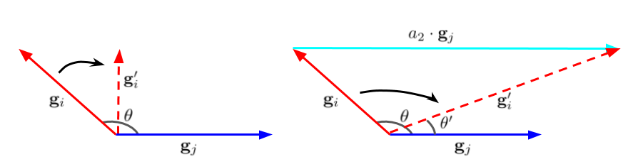
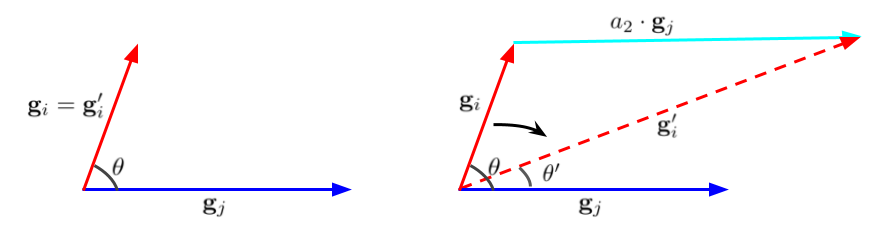

Do not force agreement to zero; nudge each pair toward its own target.
On this page
The previous page ended with surgery: cut the conflicting shadow. Surgery works, but it carries a quiet assumption I did not notice at first. When two gradients fight, PCGrad pushes every pair to the same place: a right angle. Zero is treated as the perfect relationship between any two tasks. The method on this page started with one question: is zero actually the right target?
Here is the intuition I keep coming back to. Surgery happens after the fight breaks out. A vaccine holds each pair at its healthy level so the fight never starts. That is where the name comes from: Gradient Vaccine, GradVac. And it turns out PCGrad is literally the special case where the target is zero for every pair.
Read the PCGrad rule again: if the cosine is negative, project until it is zero. Hidden inside that rule is a universal claim: any two tasks must have the same gradient similarity objective, and it is zero. Notice what the rule never does. It never asks what the pair's relationship was before the fight. It never asks whether these two tasks are friends or strangers. Zero for everyone, no questions asked.
That is a strange thing to assume about a hundred languages, or a hundred tasks of any kind. Some task pairs genuinely cooperate. Forcing them to zero would not fix a fight, it would destroy a friendship. The question is whether we can tell the difference, and the answer turns out to be yes, if we keep a little memory of what each pair normally looks like.
One model, a hundred languages. Multilingual translation trains a single network on dozens of language pairs at once, and the tasks are wildly uneven: some have billions of sentence pairs, others millions; some pairs are close cousins (French and Spanish share vocabulary and grammar), others are strangers (French and Hindi). If any set of tasks should not share one universal target, it is this one.
Before fixing anything, the authors recorded what PCGrad never looks at: the cosine between every pair of task gradients, checkpoint by checkpoint, over entire training runs. Three things showed up.
So every task pair has its own natural level of cooperation: strongly positive for related tasks, near zero for distant ones. French and Spanish's gradients naturally agree, so PCGrad's alarm never goes off. And if it did, its target of zero would be a step backwards, blocking the very cooperation that lets related languages help each other. PCGrad can stop a fight, but it cannot notice that two friends have started cooperating less than they used to. Sure enough, PCGrad did nothing on most steps of multilingual training: no cosines were negative, yet a lot of help was being left on the table.
The fix: keep a running estimate of what "normal" looks like for each pair, a slow-moving average of the cosines seen so far, tracked separately for each group of layers. Call the current cosine $\phi_{ij}$ and the pair's target $\hat{\phi}_{ij}$:
$\beta \approx 10^{-2}$: slow enough that one noisy batch cannot move a target.
Whenever the current cosine dips below this target, GradVac nudges $\mathbf{g}_i$ toward $\mathbf{g}_j$ by just enough to bring the pair back to normal: mix in a little of the other gradient, $\mathbf{g}_i' = \mathbf{g}_i + a \cdot \mathbf{g}_j$, with $a$ solved so the new cosine equals $\hat{\phi}_{ij}$ exactly. If the pair is as aligned as usual, $a = 0$ and nothing happens. If alignment starts to sag, the early warning sign of a fight that has not happened yet, $\mathbf{g}_i$ gets a small dose of the other task's gradient, pulling the pair back before the cosine can turn negative.
The paper solves for the dose with the Law of Sines in the plane spanned by the two gradients:
$\phi^T_{ij}$ is the target (my $\hat{\phi}_{ij}$ above), $\phi_{ij}$ is the current cosine. Read it aloud with real numbers, one computation per line, using the demo's defaults below:
One step of GradVac, exactly as the paper describes it:
# grads = [g_1..g_K]; target[i,j] = running target cosine, init 0
for i, j in pairs:
cos_ij = grads[i] @ grads[j] / (norm(grads[i]) * norm(grads[j]))
target[i,j] = (1 - beta) * target[i,j] + beta * cos_ij # slow running target
if cos_ij < target[i,j]: # fighting below their normal?
a = solve_for_cosine(grads[i], grads[j], target[i,j]) # restoring blend
grads[i] = grads[i] + a * grads[j] # nudge, not a full cut
d = sum(grads) # combine the edited gradientsOn small-scale WMT translation, GradVac beat the plain baseline and all three of GradNorm, MGDA, and PCGrad: on average and on every single language, which multitask methods rarely manage. On a 25-language-pair production benchmark the gains held up and were largest exactly where interference bites hardest: the high-resource languages. It also improved multilingual BERT on named-entity recognition.
And there is a free side product I keep coming back to: the pairwise-cosine log itself costs a few lines of code and draws me a map of how my tasks relate while I train, which is why the Field Guide puts it on the diagnose-first checklist. Even if you never vaccinate a single pair, watching the cosines is worth it.
This is the paper's own comparison of the two methods, the diagram the whole idea hangs on. Case (a) is a pair that is really fighting, negative cosine. Case (b) is a pair that agrees, positive cosine, but less than it used to.

Case (a): negative similarity. Left is PCGrad, right is GradVac.

Case (b): positive similarity. Left is PCGrad, right is GradVac.
Rebuilt from Figure 5 of Wang et al. (ICLR 2021), using the actual figure files from the paper's arXiv e-print source, unmodified. arXiv:2010.05874
Figure 5, verbatim caption: "Comparing PCGrad (left) with GradVac (right) in two cases. (a): For negative similarity, both methods are effective but GradVac can utilize adaptive objectives between different tasks. (b): For positive similarity, only GradVac is active while PCGrad stays "idle"."
Wang, Z., Tsvetkov, Y., Firat, O., Cao, Y. Gradient Vaccine: Investigating and Improving Multi-task Optimization in Massively Multilingual Models. ICLR 2021. arXiv:2010.05874. https://arxiv.org/abs/2010.05874
Three, and the paper's defaults all worked well. The averaging speed beta ($10^{-2}$ was best): the beta slider above shows why, since a faster beta lets one noisy batch yank the target around. Which tasks to vaccinate: only the low-resource ones, since they have the most to gain from borrowed alignment. And granularity: one target per layer group beat one target for the whole model, matching the finding that alignment varies by layer.
Direction is handled softly now: each pair is nudged back to its own healthy level, never forced to a universal zero. But nothing on this page promises anything about the task that ends up worst off. What if, instead of nudging pairs back to normal, we demanded a guarantee on the worst task? That is the next page.